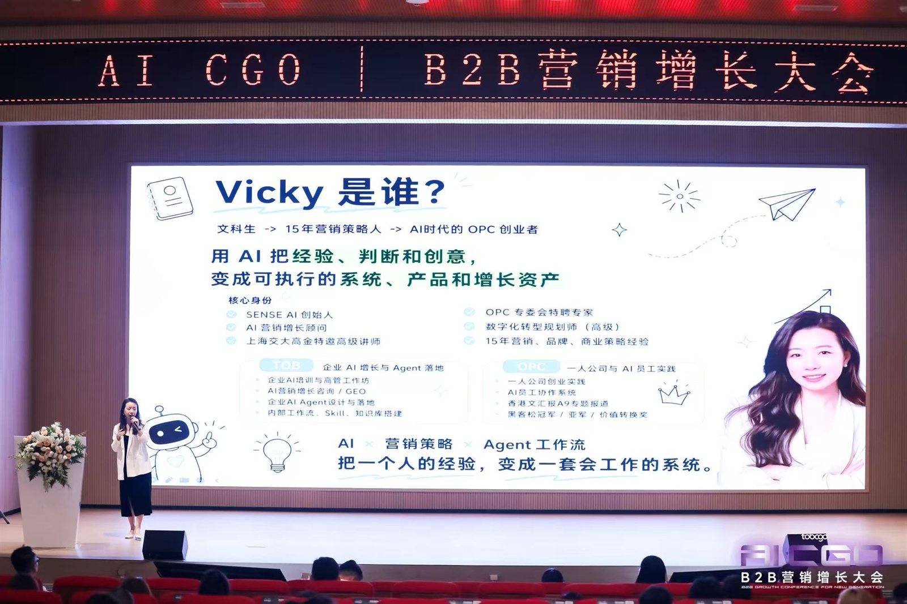
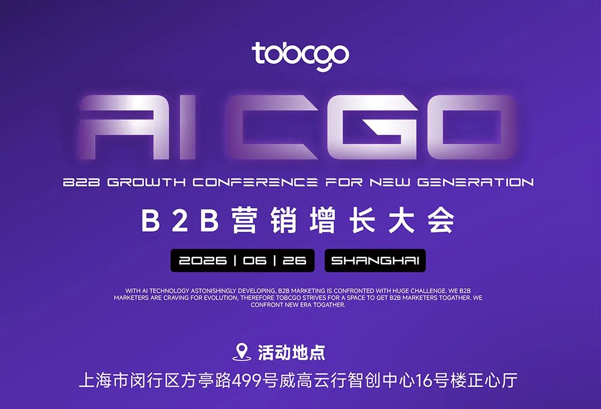
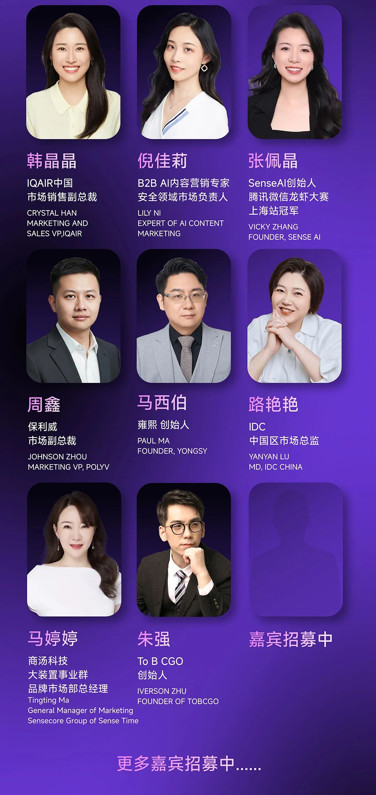
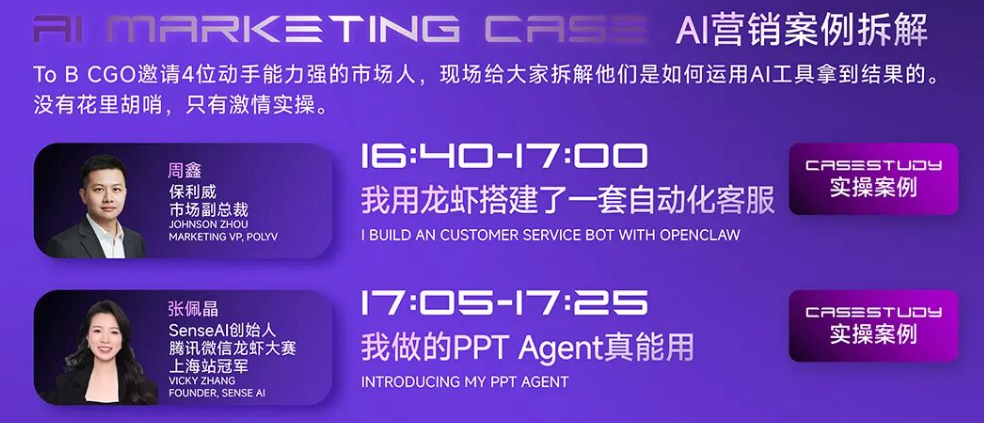
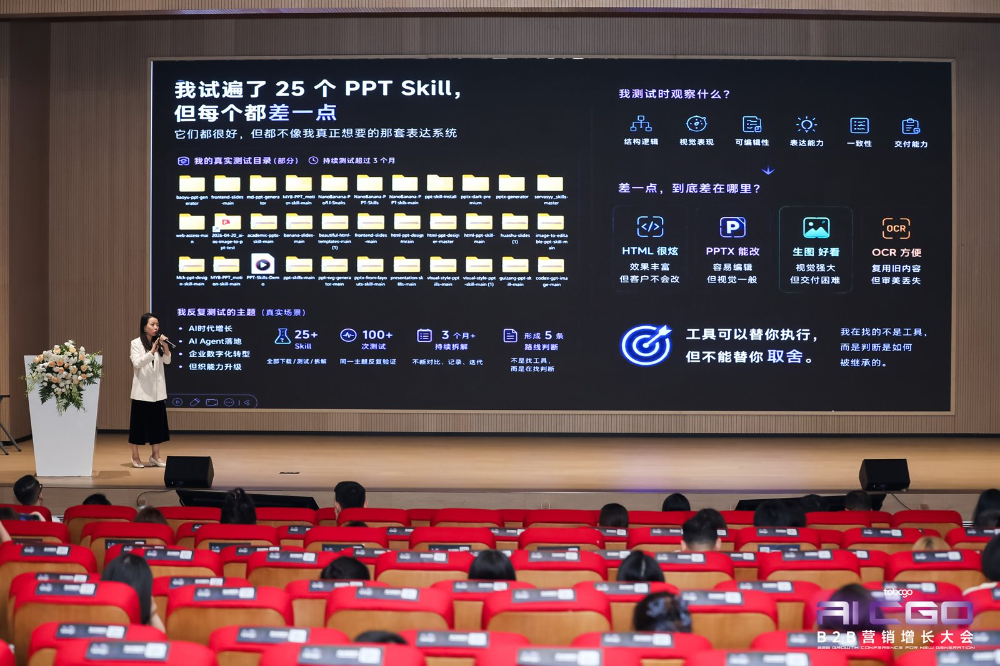

2026 年 6 月 26 日，由 To B CGO 主办的 AI CGO·2026 B2B 营销增长大会在上海威高云行智创中心举行。大会以“全球 B2B CMO 向 AI 进化”为核心命题，汇聚了来自华为、腾讯 CSIG、AWS、SAP、IBM、IDC、网易智企、Focussend、雍熙、保利威等企业的市场高管与 AI 实践者，围绕全球趋势、品牌战略、官网 GEO 改造、营销自动化、AI 实操案例等议题展开深度分享。SENSE AI 创始人、AI 营销增长顾问张佩晶受邀出席，并在「AI 营销案例拆解」环节带来 20 分钟实操案例《我做的 PPT Agent 真能用》。
- 活动名称：AI CGO·2026 B2B 营销增长大会
- 时间地点：2026 年 6 月 26 日，上海 · 闵行区方亭路 499 号威高云行智创中心 16 号楼 2 楼正心厅
- 主办方：To B CGO
- SENSE AI 参与：张佩晶在「AI 营销案例拆解」环节 17:05–17:25 实操分享《我做的 PPT Agent 真能用》
- 核心议题：PPT Agent、AI 时代的 B2B 营销增长、GEO、AI Agent、营销自动化

从“效率工具”到“增长系统”
AI 对 B2B 营销的影响已经不再停留在“写一段文案”或“生成一张海报”。大会上，IDC 中国区市场总监路艳艳指出，买家旅程正在变得不可见，AI 已成为买家发现品牌的第一站，来自生成式 AI 渠道的流量同比增长了 12 倍。这意味着，CMO 的核心目标正在从“用好 AI 工具”转向“把 AI 嵌入统一的营销系统”。
网易智企 CMO 姜菡钰在分享中提出“AI 伙伴四要素”——有上下文、有边界、能执行、可沉淀，强调 AI 再发达也无法替代人情世故，B2B 营销的关键在于把优秀员工的“组织记忆”沉淀为可复用的流程。这一判断与 SENSE AI 在服务企业客户时的观察高度一致：真正改变经营方式的，不是单个 AI 功能，而是可被团队调用、交接和持续优化的 AI Agent 工作流。

张佩晶：《我做的 PPT Agent 真能用》实操拆解
在「AI 营销案例拆解」环节，张佩晶于 17:05–17:25 带来实操案例《我做的 PPT Agent 真能用》。与概念演示不同，这次分享直接展示了一个已经跑通的 PPT Agent：它理解 B2B 营销物料的结构化需求，把原本需要数小时的内容整理、版式调整与视觉美化，压缩为可复用的智能体工作流。现场没有“花里胡哨”，只有可执行的步骤、可验证的输出和可迭代的 prompt。

她认为，B2B 营销人每天面对的最大矛盾，是“既要高质量，又要快产出”。PPT Agent 的价值不在于替代设计师或市场经理的判断，而在于把反复出现的版式、数据可视化、品牌规范和内容结构变成可被团队反复调用的能力。当 AI 把重复性工作接管后，人的精力才能回到策略、关系和创意上。

这一判断与 SENSE AI 服务企业客户的核心思路一致：真正改变经营方式的，不是单个 AI 功能，而是可被团队调用、交接和持续优化的 AI Agent 工作流。从营销 PPT、官网 GEO、内容分发到展后复盘，每一个环节都可以被重新设计成智能体任务。
AI 不会淘汰 CGO，只会出现 AI CGO——把 AI 变成增长系统的人，才是下一代增长官。
从 PPT Agent 实操到企业 AI 培训与 AI 营销咨询
这并不是 SENSE AI 与 To B CGO 的第一次交集。2026 年 4 月，张佩晶曾做客 To B CGO 视频号直播间，围绕 OpenClaw 工作流搭建与 AI 创业实战进行深度对谈。从线上直播到线下大会，SENSE AI 始终关注同一个问题：帮助企业把 AI 从“看看演示”推进到“真实业务可用”。
AI CGO·2026 B2B 营销增长大会的实战氛围再次说明，B2B 市场负责人需要的不是更多概念，而是能够直接落地的方法、工具和可复用的工作流。SENSE AI 面向企业提供企业 AI 培训、AI 落地咨询、AI 营销培训、AI 营销咨询与长期陪跑：先回到业务现场，识别最高频、最耗时、最影响增长的任务，再把 PPT Agent、Marketing AI Agent 等工具沉淀为团队可持续使用的业务能力。
常见问题
公开来源
公开报道：AI CGO·2026 B2B营销增长大会（To B CGO 微信公众号）；直击 AI CGO B2B 营销增长大会，雍熙 CEO 马西伯解读 AI 官网升级逻辑（网易）；Focussend 参加 To B CGO 营销增长峰会（中华网）。